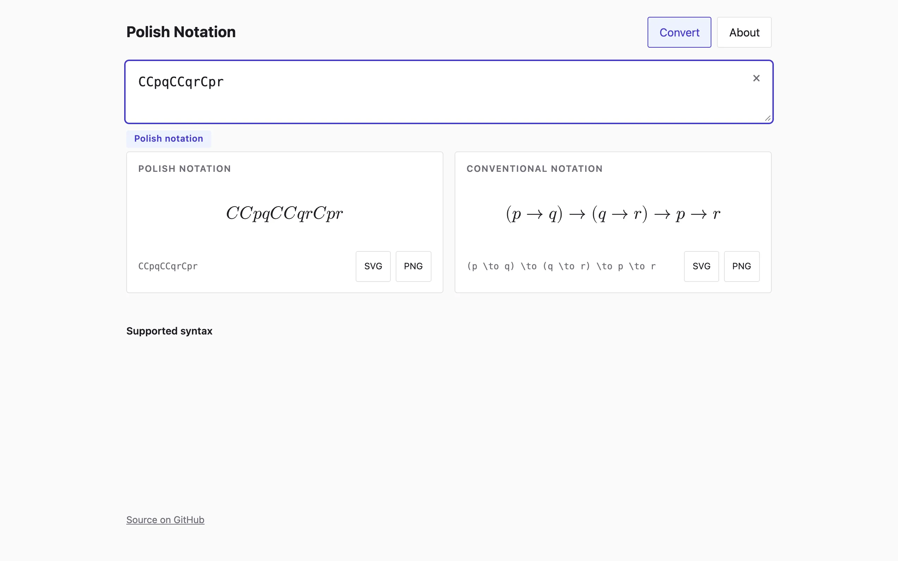

Polish notation puts every logical operator before its arguments. The conventional \((p \land q) \to r\) becomes CKpqr: C for implication, K for conjunction, then the three variables in order. Jan Łukasiewicz devised it in 1924 and used it in print from his 1929 Elementy logiki matematycznej. Because C always takes two arguments and N always takes one, a string like CNpq reads in exactly one way, and parentheses have nothing left to do. I built a page that takes a formula in either notation, works out which one it is, and renders both, with the LaTeX a click away.
Detection comes down to the letters. Łukasiewicz used capitals for the connectives, following their Polish names where he could: N for negacja, K for koniunkcja, A for alternatywa, D for dysjunkcja (the Sheffer stroke), E for ekwiwalencja, and later L and M for necessity and possibility, with Π and Σ for the quantifiers. Variables are lowercase. So a formula containing an uppercase letter is Polish, and a formula containing ∧, →, or a backslash command is conventional. The converter runs both parsers on the input, and if exactly one succeeds that's the answer. If both succeed, which only happens for a lone variable like p₁, the badge says either. If neither does, a regex looks for conventional symbols to decide whose error message to show.
One syntax tree
Both parsers produce the same syntax tree: atoms with a name, a subscript, and a prime count; the constants true and false; unary not, box, and diamond; five binary connectives; and two quantifiers. The Polish parser is recursive descent with no lookahead. Read an operator, recurse for exactly as many arguments as it takes, and complain when the input ends early with a message like "'C' needs 1 more argument". The conventional parser is precedence climbing over binding powers: biconditional 10, implication 20, or 30, and 40, nand 50, and 60 for the prefix operators. Implication and biconditional associate to the right, so \(p \to q \to r\) is \(p \to (q \to r)\). Nand doesn't associate, so \(p \mid q \mid r\) is rejected with a request for parentheses.
The conventional lexer accepts the three spellings people type: Unicode symbols, ASCII like ->, &, and ~, and LaTeX commands like \to and \neg. It skips \left, \big, and dollar signs so a formula pasted out of a paper parses as written. Atoms may be Latin or Greek letters with subscripts in any of the forms p1, p_1, p_{12}, or p₁, and primes as ', ′, or ^{\prime}.
The printers go the other way. The Polish printer is a preorder walk. The conventional printer emits LaTeX with minimal parentheses. A subformula is wrapped only when its connective binds more loosely than the position requires, so CCpqr comes out as \((p \to q) \to r\) but CpCqr as \(p \to q \to r\), and KpKqr keeps its parentheses because conjunction is left-associative here.
C. L. Hamblin's 1962 paper Translation to and from Polish notation in The Computer Journal gives the classic algorithms. Burks, Warren, and Wright's 1954 analysis of a parenthesis-free logic machine is where the idea met hardware, and reverse Polish went from there into stack machines and HP calculators.
Testing the parsers against each other
Hand-picked examples would have missed the interesting cases, so the tests generate formulas. fast-check builds random trees over ten variable names with subscripts and primes, and the properties are round trips. Print a tree in either notation, parse it back, and the tree has to come back equal, including through the whole convert function with detection. The trailing space after a Greek atom in the Polish LaTeX exists because \varphi followed by a variable q would fuse into the unknown command \varphiq.
Formulas from the literature are checked against their textbook forms too, among them Łukasiewicz's three axioms for the propositional calculus in C and N (CCpqCCqrCpr, CCNppp, CpCNpq), his shortest single axiom for the implicational calculus CCCpqrCCrpCsp, and Meredith's 1953 single axiom CCCCCpqCNrNsrtCCtpCsp.
I chose V and O for the constants true and false, and I accept Q, Δ, and Γ as alternate spellings of E, M, and L, normalizing them to the primary letters on output.